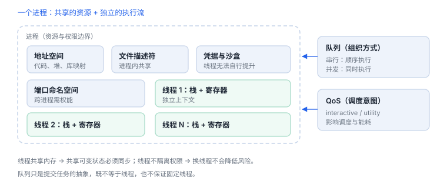
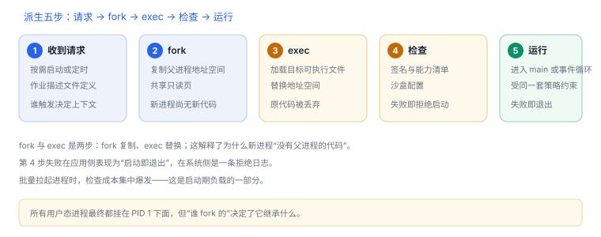

进程、线程与调度
进程是资源容器，线程是调度单位，队列只是组织方式
三个概念常被混用：进程持有地址空间与凭据，线程是可被调度的执行流，队列是提交任务的抽象。分清它们，才能解释“为什么换个线程并不能提升权限”。
1. 资源归属
| 资源 | 归属 | 线程间共享 |
|---|---|---|
| 虚拟地址空间 | 进程 | 是 |
| 栈与寄存器 | 线程 | 否 |
| 文件描述符表 | 进程 | 是 |
| 凭据与沙盒 | 进程 | 是（不可自行提升） |
| 端口命名空间 | 进程 | 是（跨进程需权能） |
直接推论：线程共享内存，所以共享可变状态必须同步；线程不隔离权限，所以“换到后台线程”不会降低风险，也不会绕过沙盒。
2. 线程与栈
- 主线程承担 UI 与事件分发，阻塞它等于卡住界面。
- 子线程默认栈空间有限（常见 512 KB 量级，可按属性调整），递归与大队列数组容易踩栈。
- 线程局部存储在子线程不继承主线程的值。


3. 调度输入
| QoS | 适用 | 误用后果 |
|---|---|---|
| userInteractive | 动画、直接响应 | 挤占资源、耗电 |
| userInitiated | 用户等待的短任务 | 滥用等同全速跑 |
| utility | 可延迟的维护工作 | 放到前台路径会变慢 |
| background | 预取、清理 | 被系统大幅限流 |
Swift：把工作放到合适队列，并回到主执行器
DispatchQueue.global(qos: .utility).async {
let result = compute() // 无 UI 依赖
DispatchQueue.main.async {
render(result) // 回到主线程
}
}4. 优先级与锁
| 原语 | 优先级继承 | 建议 |
|---|---|---|
| 互斥锁（带继承语义） | 有 | 短临界区 |
| 普通互斥锁 | 无 | 注意高优先级被拖慢 |
| 串行队列 | 不适用 | 把状态收敛到单一上下文 |
| 原子操作 | 不适用 | 仅适合单变量 |
线程不是权限单位
把敏感操作放到后台线程不会降低风险，也不会绕过沙盒；线程只改变执行位置，不改变凭据与策略。
把敏感操作放到后台线程不会降低风险，也不会绕过沙盒；线程只改变执行位置，不改变凭据与策略。
5. 观测：进程、线程与作业
模拟器中查看进程与线程
xcrun simctl spawn booted ps -A -o pid,ppid,comm | head
xcrun simctl spawn booted launchctl list | head6. 失败分流
| 现象 | 原因 | 查哪里 |
|---|---|---|
| 界面卡顿但 CPU 不高 | 主线程等待锁或 I/O | 主线程栈、同步调用 |
| 偶发数据错乱 | 共享状态无同步 | 线程检查工具 |
| 后台任务迟迟不跑 | QoS 过低被限流 | 任务队列与优先级 |
| 崩溃在栈溢出 | 递归或大局部变量 | 线程栈大小 |
7. 数据细节：几个决定行为的默认值
| 项 | 默认值 / 量级 | 影响 |
|---|---|---|
| 主线程栈 | 1 MB 量级 | 递归与大队列数组容易踩栈 |
| 子线程栈 | 512 KB 量级（可配置） | 默认更小，深调用易溢出 |
| QoS 档位 | 4 档 | 决定调度优先级与能耗 |
| 串行队列 | 同一时刻一个任务 | 天然互斥，但会排队 |
| 上下文切换 | 微秒级 | 频繁切换会吃掉吞吐 |
这些默认值解释了很多“看起来玄学”的现象：同样的代码在主线程与子线程表现不同，往往只是栈大小与 QoS 不同。
8. 一次真实排查记录：界面卡顿但 CPU 不高
- 现象：滑动卡顿，但 CPU 占用只有个位数。
- 先怀疑等待：低 CPU 高延迟通常意味着主线程在等锁或同步 I/O。
- 取主线程栈：采样主线程，看是否停在锁等待或文件/网络调用上。
- 定位来源：顺着调用链找到把同步操作放到主线程的那一行。
- 结论与限制：记录“主线程同步等待”，并注明结论只对该路径成立，其他入口需单独验证。
9. 工程权衡：锁、串行队列还是 actor
| 方式 | 优势 | 代价 |
|---|---|---|
| 互斥锁 | 临界区最小，改动局部 | 容易死锁，优先级反转 |
| 串行队列 | 状态收敛到单一上下文 | 重活会堵住同队列所有任务 |
| actor | 编译期约束访问 | 需要改造调用点，跨 await 有状态窗口 |
选择标准不是“哪个更现代”，而是“这份状态被谁访问、能不能收敛到一个上下文”。
实机输出：进程树（macOS）
PID PPID COMM
1 0 /sbin/launchd
89 1 /usr/libexec/logd
91 1 /usr/libexec/UserEventAgent读法：PID 1 且 PPID 0 是 launchd，所有用户态进程最终都挂在它下面；COMM 给的是完整路径，说明这条信息不含隐藏。PPID 比 PID 更能说明“谁启动了它”。
10. 自测
- 为什么线程之间不需要“传递文件描述符”就能共用？
- QoS 与实际执行时间是什么关系？
- 优先级反转在什么条件下发生？
- 主线程卡顿但 CPU 占用低，可能是什么原因？